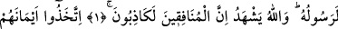
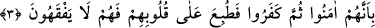
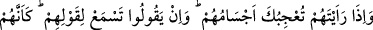
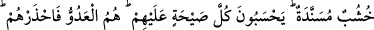
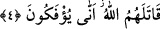

MÜNÂFIKLAR DUVARA DAYANMIŞ
KÜTÜKLER GİBİDİR
Bismillâhirrahmânirrahîm
1. Münâfıklar sana geldiklerinde: Şâhidlik ederiz ki sen Allah’ın Peygamberisin,
derler. Allah da bilir ki sen elbette, O’nun Peygamberisin. Allah, münâfıkların
kesinlikle yalancı olduklarını bilmektedir.
2. Yeminlerini kalkan yapıp Allah yolundan yan çizdiler. Gerçekten onların
yaptıkları ne kötüdür!
3. Bunun sebebi, onların önce îmân edip sonra inkâr etmeleridir. Bu yüzden
kalpleri mühürlenmiştir. Artık onlar hiç anlamazlar.
4. Onları gördüğün zaman kalıpları hoşuna gider, konuşurlarsa sözlerini dinlersin.
Onlar sanki duvara dayanmış kütükler gibidir. Her gürültüyü kendi aleyhlerine
sanırlar. Düşman onlardır. Onlardan sakın. Allah onların canlarını alsın. Nasıl bu
hale geliyorlar?
“Münâfıklar sana geldiklerinde” şimdi veya devamlı olarak “Şâhidlik ederiz ki sen
Allah’ın peygamberisin, derler.” Nifak, dil ile îmânı açıklayıp kalple inkârı
gizlemektir. O halde münâfık, inanç bakımından küfrü gizleyip, sözle îmânı açıklayan
kimsedir.
Müfredât adlı eserde: Nifak, İslâm dinine bir kapıdan girip diğer kapıdan çıkmaktır.
Nifak kelimesi, arapçada, tarla faresi, tilki ve keler ini anlamındadır. Bu hayvanlar
inlerinin bir kapısını gizlerler. Girmiş olduğu kapıdan kendisine varıldığında gizlediği
kapıyı başı ile vurarak gizlendiği inin diğer kapısı açılır ve oradan çıkar. “Nefak”, “yer